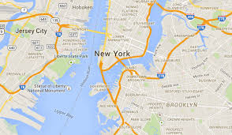

<ion-header>

  <ion-navbar>
    <ion-title>Company route</ion-title>
  </ion-navbar>

</ion-header>

<ion-content class="thirty-content-container-socondary" padding>

  <ion-card>

      
      <ion-fab right top>
        <button ion-fab class="company-route-pin-button">
          <ion-icon name="pin"></ion-icon>
        </button>
      </ion-fab>

      <ion-item>
        <ion-icon name="pin" item-start large></ion-icon>
        <h2>Teste 1</h2>
        <p>R. Visc. de Taunay, 299 - Centro, Joinville - SC</p>
      </ion-item>

      <ion-item>
        <span item-start>18 min</span>
        <span item-start>(2.6 mi)</span>
        <button ion-button icon-start clear item-end class="company-route-navigate-button">
          <ion-icon name="navigate"></ion-icon>
          Start
        </button>
      </ion-item>

    </ion-card>

</ion-content>
